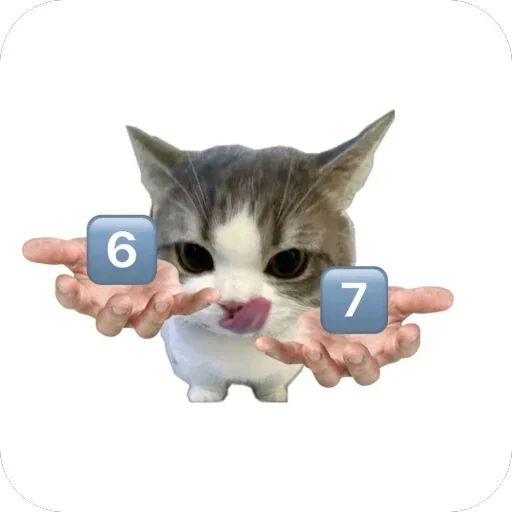

Дело № 01 / Simple Forms Examples
Дело о пропавшем
Дело о пропавшем
завтраке.
Утро началось без яичницы. Кофе тоже исчез.
Накройте стол.
Свидетель пока молчит.
Вещественные доказательстваВид сверху / 01
Подготавливаем стол…

Секретный протокол № 67.
Кот назвал время:
«сикс-севен». Алиби стало только запутаннее.
Каждое нажатие добавляет кофе или яичницу. После 12 улик стол заполнится — пора начать заново.